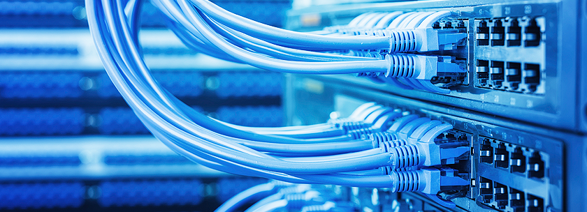

Networking
Menurut WikiPedia, jaringan komputer adalah jaringan telekomunikasi yang memungkinkan antar komputer untuk saling berkomunikasi dengan bertukar data. Tujuan dari jaringan komputer adalah agar dapat mencapai tujuannya, setiap
bagian dari jaringan komputer dapat meminta dan memberikan layanan (service). Pihak yang meminta/menerima layanan disebut klien (client) dan yang memberikan/mengirim layanan disebut peladen (server). Desain ini disebut dengan
sistem client-server, dan digunakan pada hampir seluruh aplikasi jaringan komputer.
Dua buah komputer yang masing-masing memiliki sebuah kartu jaringan, kemudian dihubungkan melalui kabel maupun nirkabel sebagai medium transmisi data, dan terdapat perangkat lunak sistem operasi jaringan akan membentuk sebuah
jaringan komputer yang sederhana. Apabila ingin membuat jaringan komputer yang lebih luas lagi jangkauannya, maka diperlukan peralatan tambahan seperti Hub, Bridge, Switch, Router, Gateway sebagai peralatan interkoneksinya.
Mengapa Tertarik Pada Dunia Networking?

Semua berawal saat saya masih duduk di bangku SMP. Saat itu saya harus memindahkan suatu file dari Laptop ke PC. Akan tetapi tidak ada media seperti flashdrive, harddisk atau sejenisnya yang dapat saya gunakan. Dari situ saya
berpikir bagaimana memindahkan file tersebut tanpa kabel dan tanpa media penyimpanan.
Kemudian saya iseng untuk mencari hal tersebut di Google, dan akhirnya saya menemukan cara bagaimana terhubung dari Laptop ke PC. Saat itu saya tidak sadar bahwa saya telah menerapkan konsep jaringan karena pada saat itu saya
sama sekali belum mengetahui mengenai jaringan.
Karena antusias saya terhadap teknologi, maka saya memutuskan untuk mengambil jurusan Teknik Informatika. Dan saat dikampus saya diajarkan mata kuliah Jaringan Komputer (Cisco CCNA 1) rasa penasaran yang dulu tersimpan kembali
muncul. Saya tidak mengabaikan kesempatan itu untuk belajar mengenai Jaringan, hingga akhirnya saya bisa lulus dengan memuaskan di mata kuliah tersebut. Meskipun mata kuliah tersebut telah berakhir, tetapi rasa penasaran saya
terhadap dunia Networking tidak pernah berakhir, dan akan terus belajar, mendalami mengenai dunia Networking.
Berikut ini adalah sejarah mengenai Jaringan Komputer